<nav
  class="navbar"
  [class.navbar--color]="navbarBackgroundColor"
  [ngStyle]="{ transform: 'translateY(' + transformValue + 'px)' }"
>
  <div class="navbar__container container">
    <div class="navbar__top cursor-pointer">
      
      <div class="navbar__buttons" (click)="toggleSidebar()">
        
        
      </div>
    </div>
    <div class="navbar__wrapper" [class.active]="showSidebar" [class.transition]="showSidebar">
      <ul class="navbar__wrapper-links">
        <li><a class="color-white cursor-pointer">Explore</a></li>
        <li><a class="color-white cursor-pointer">News</a></li>
        <li><a class="color-white cursor-pointer">Events</a></li>
        <li><a class="color-white cursor-pointer">About</a></li>
        <li><a class="color-white cursor-pointer">Shape my helix</a></li>
        <li><a class="color-white cursor-pointer">Contact</a></li>
        <li><button class="button primary">My helix →</button></li>
      </ul>
    </div>
  </div>
</nav>
